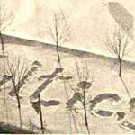
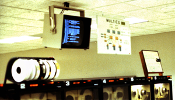
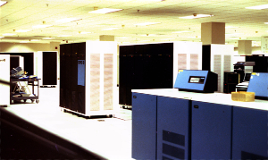

Location
HI-Multics (CNO) was installed at Honeywell Corporate Headquarters in Minneapolis, Minnesota.
[Phil Dreyer] It was installed in the main building and moved to "Plaza South" after that addition was completed.
First Installed
Feb 1979

[Cec Erickson] The decision to get Multics in Minneapolis was made in January 1978 and the CNO system was up and running in February 1979 with over 400 registered users and 70 projects. (CNO customers were using the Phoenix system first and then we transferred their work to CNO system. As an interesting aside, when we shut down the CNO system in December 1986 there were over 3000 registered users that we had to migrate to other systems and, oh by the way, to the best of my knowledge NONE of them migrated to a GCOS system....)
See the Honeywell newsletter article "Snow Joke" celebrating the system installation.
Configuration: (1979)
Two DPS8 CPUs,
4 MSU0501 disk (1 GB each),
13 MSU0451 disk (150 MB each),
xx tape drives,
printer,
card reader & punch.
[Phil Dreyer] It actually started out with three L68's, but was later replaced by 2 DPS8's. The system moved to Plaza South sometime in the summer of '83. I started working at Corporate in February of '83 and helped move the system to Plaza South.
[Ed Sharpe] The original machine had L68 processors and only the 451 disks (I think there were more than 13). It also had 2-3 FNPs (DNSxxxx) connected to a bank of dial-in modems (300bd and 1200bd). There was also an X.25 connection which a few used.
[Ed Sharpe] We also had an ARPANet connection. I recall the IMP and a 9600baud modem. I believe our link went to an IMP in St Louis or Omaha, can't recall. (Connection via ABSI to 10.1.0.94, 129.30.1.1 [RFC 848].)
[Phil Dreyer] Our ARPANet link went to the University of Wisconsin at Madison. I remember as I had to fly there once to replace the modem. I don't remember the model of the modem, but it was the size of a suitcase. If I ever saw a picture of it again I could tell you the model.
[Ed Sharpe] The upgrade to DPS8 I believe happened with the move to the south building. (I.e., stand up the new machine, making the "move" a restore of backup tapes to the new system).
Dave Jordan I remember solving an operator support problem. The Multics operator's console was located some distance from the GCOS console(s?) and, since Multics generally ran without much operator support, they didn't come by to check on it very often. I ended up going to Radio Shack and buying a twirling red (I think) party light. One of the FEs hooked it up to the alarm(?) signal on the Multics console and ran it over to the GCOS area, so when requests came up on the Multics console the light started flashing and the operators knew to go look.
Photos
Hardware

HI-Multics, 1984 (Phil Dreyer)

HI-Multics, 1984 (Phil Dreyer)
[Phil Dreyer] Here's a few photos of the CNO Multics system as it appeared in Plaza South circa 1984. A totally different story how I managed to sneak my camera in to take these photos.
People
There is a page with pictures of CNO people, from a 1981 party at Dave Jordan's.
Application areas
Ada, DPS-6, mail, product mgt, Systems and Research Center, Solid State Electronics Division (SSED), Corporate Computer Sciences Center (CCSC), CSFC, CPSC, HIS staff
[Ed Sharpe] Other application areas were Defense Systems Division (DSD) and Military Avionics Division (MAvD).
People
Site Analysts and System Administrators

Bob Asproth SysAdmin: Site Analyst
David Bergum Site Analyst
Phil Dreyer SysAdmin: Applications developer and one of the Multics SysAdmins for Corporate Honeywell from 1983-1987.
Don Mengel Site Analyst
Ed Sharpe Site Analyst
Bruce Johnson Site Analyst
Randy Lee Site Analyst
Dave Jordan Supervisor, CNO Multics Services.
Larry Christenson - CNO, Supervisor, CNO Multics Services.
Operations
The people who ran CNO included
Mike Dillon Operations: Computer Operator
Field Engineering
xx.
User Support

Grant Garriott Support: Administration, Corporate Liaison with divisions
Susan Hildebrand (Bender),
Doug Dykes
Marge Lee
Terry Schuller
Karen Mills
Cec Erickson - manager
Diane Anderson - account manager
Marketing
Rick Stone Marketing (HIS): CNO acct.
Bruce Johnson Marketing (HIS): CNO acct.
Users
Gregory Mudd Honeywell TC&SD software, Green Language (ADA) evaluation, DPS-6 development
Bonnie Holte Bennett Honeywell Systems and Research Center
David Cargo Project management, using e-mail, forum, and compose
David Collier-Brown SDE for DPS-6, using (among others) the ADAsil cross-compiler.
Ronald Heiby Various tools for Honeywell Avionics and Honeywell CSFC.
David Loeffler VLSI Design software.
Roy Neale Site Administrator, Honeywell IAC, Ft. Washington, PA.
Jim Richardson
David Rosenberg
Randy Saunders Software CM in Ring-5
Rick Smith Corporate Computer Science Center.
Drew Sullivan SDE for DPS-6.
John Gilson
Joe Kruckas - CNO
Maggie Sharpe - CNO
Rich Wilkinson - CNO
John Ellsworth - CNO
Here is a CNO Phone List from 1981 thanks to Dave Jordan. (19K PDF)
[Ed Sharpe] I had the primary responsibility for keeping the system running (3am calls from operators, etc) for '81-mid'83. Before that in '80 I had some miscellaneous development work (e.g., scheduler changes for fine grain real time timers - didn't finish). I reported to Dave Jordan. Once Dave left I reported to Larry Christenson.
[Ed Sharpe] Diane Anderson, and at least one other, were account managers who were points of contact for managers in the divisions who wanted to obtain service, had issues, etc. I don't know for sure, but suspect there was some kind of purchase order paperwork they handled. They probably also set the billing rates. I believe CNO was NOT a profit center. I have some recollection that the billing rates were based on our costs divided by the usage.
[Ed Sharpe] Bob Asproth did user/project registration and ran Multics billing. I don't know if he actually sent the bills and processed the payments - that may have been the responsibility of some other CNO group.
[Ed Sharpe] Terry Schuller and Karen Mills provided first line user help (phone/email). They would consult with David Bergum, Maggie Sharpe, John Ellsworth, Randy Lee, myself, Bob Asproth, and later Phil Dryer as necessary. We, in turn, would occasionally post questions (or bugs or fixes) to the Multics developers. Having the source code was really handy.
[Ed Sharpe] Most of the non-CNO folks in the "Users" list were "Tech Reps" for their divisional groups (across the country). Users in their organizations would contact them first, and they would call CNO folks to get additional help, air complaints, etc.
Development
Here is an internal Honeywell CNO document from 1980 describing policies and procedures for submitting software to the CNO site libraries, thanks to Phil Dreyer. (23 page PDF)
Anecdotes
[Dave Jordan] Initially, at least, I was responsible for most of the technical side of the installation and operation. Cec and I (as I recall) went down to USL at some point, interviewed Ed and Maggie and hired them to come to Minneapolis. I must admit that my memory, weak at the best of times, doesn't remember a whole lot... Like I don't remember standing in the snow...
[Phil Dreyer] In 1982, these Multicians formed a band called Ring Zero and the Null Pointers: Grant Garriott, Phil Dreyer, Linda Paulson, Dave Bergum, and Bob Schneider. The band was later renamed MidLife Crisis and included Steve Lundquist, Greg Kimball, Chris Clausen, Jason Nickel, Kevin Schneider, Scott Schneider, Grant Garriott, Phil Dreyer, Bob Schneider, and Chad Mathis.
Dick Hill's story about Honeywell Management describes the history and personalities of some of the top management, and their effect on Multics, from 1970 to 1985.
Tom Rykken's story about Flower describes the corporate politics around a last Honeywell attempt to save Multics in 1984.
[ David Collier-Brown] In 1984, Paul Stachour of the Honeywell Computer Sciences Center gave a talk titled Observations on Software Maintenance to the local university and the Ada SIG.
[Ed Sharpe] Randy Saunders got his users into Ring 5 after I gave a presentation on the ring architecture at the 1980 conference. He may have been the only one because each OS release came with a few commands/libraries not having the correct ring settings (and could not be executed in ring 5).
[Ed Sharpe] I think it was at CNO that a portion of the raised computer room floor collapsed causing CPU or Memory boxes to lean over. No harm came to them.
[Ed Sharpe] I recall a field engineer taking out boards and sniffing them - looking for burned chips.
[Ed Sharpe] One outage was caused by a janitor mistakenly hitting "the red button" for full computer room power cutoff thinking it opened the exit door.
[Ed Sharpe] The 451 disk packs could be moved around (along with the disk ID plug) if a drive went bad. However, if it were a head crash the spare drives were immediately damaged as well. Over time the heads on drives got different alignments, and spare drives would not read a moved disk pack. Once we had to do two full backups, realign all heads, reformat the media, then restore.
[Ed Sharpe] There was a memorable July 4th party at Dave Jordan's in 1981 (or '82?). Actually, perhaps little is remembered.
[Dave Jordan] I do remember the party, as it involved the consumption of copious amounts of champagne. My house had a deck on the back, with a railing around the deck. We began lining up the empties on the railing and were running out of railing space by the end. My next door neighbor started mowing his grass but made too much noise, so we invited him over to join the party. He left his lawnmower in the middle of his yard and it didn't move for the next week.
[Ed Sharpe] The GCOS machine(s?) at the site were overloaded at some point and work was offloaded to the Multics system in a couple ways: 1) use the GCOS emulator on Multics - there was at least one report that the program ran faster; 2) shut down Multics late at night, boot GCOS on the L68.
Final Shutdown
1987 month? replaced by what?
Thanks for information from Phil Dreyer, Bob Asproth, Ed Sharpe, and Dave Jordan.
Written May 2020